О пути в креативе и хобби
Рекламой я заинтересовалась в 10 классе, тогда же решила поступать на направление «Реклама и связи с общественностью», чтобы снимать те самые ролики, которые крутят по ТВ.
В вузе меня быстро опустили с небес на землю, но меня было не остановить, я начала поиск работы, и уже с первого курса устроилась в агентство RTA стажером. Мечта работать в крупном известном агентстве сбылась, когда меня пригласили в команду BBDO.
Я всегда любила писать и что-то выдумывать, сначала это были школьные сочинения и постановки, потом статьи в вузовском журнале, а теперь я пишу для известных брендов и придумываю большие идеи.
Я обожаю соревноваться и вдохновлять других на победу. Это качество здорово помогло во время учебы в академии Wordshop.
В свободное время я тренируюсь в спортзале, хожу в баню, занимаюсь вокалом и рисую. Мне нравится готовить сложные блюда, и я часто пробую рецепты самых разных кухонь мира.
Моя мечта — увидеть своими глазами гонку Ф1 в Италии. Путешествия и Формула 1 — еще одна моя страсть.
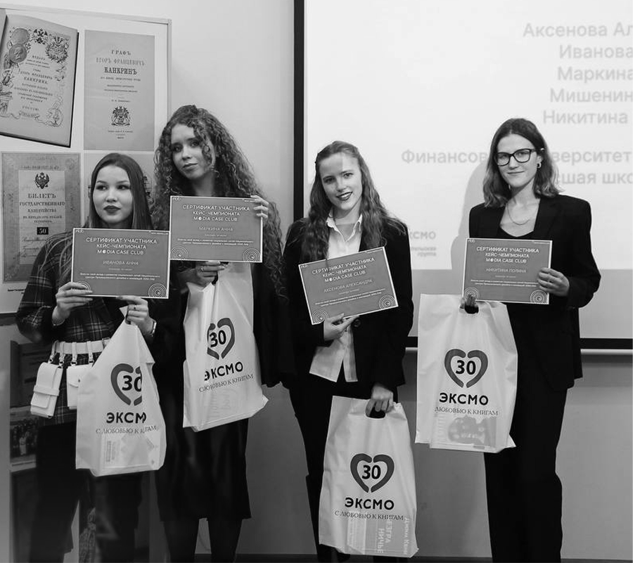
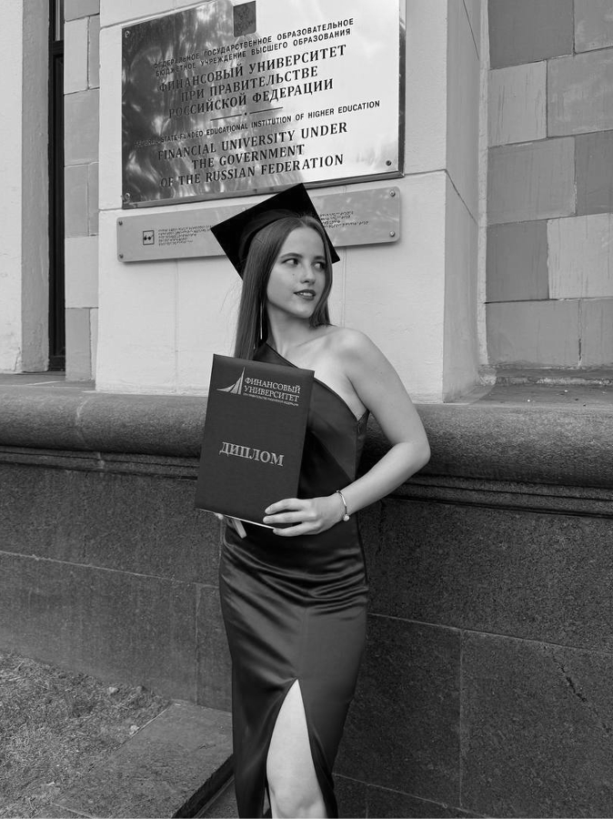
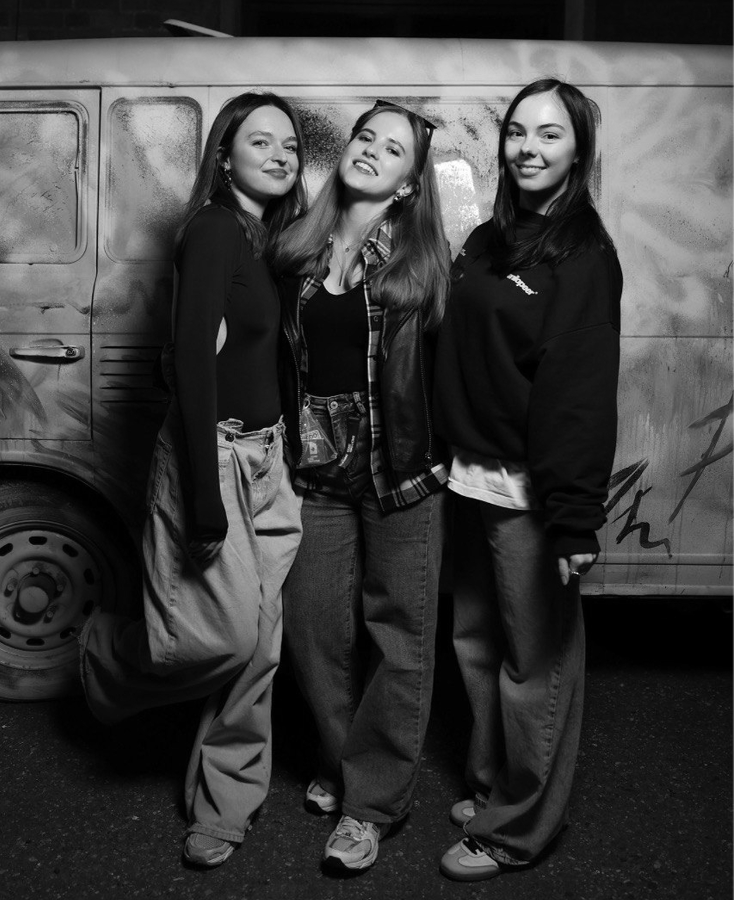
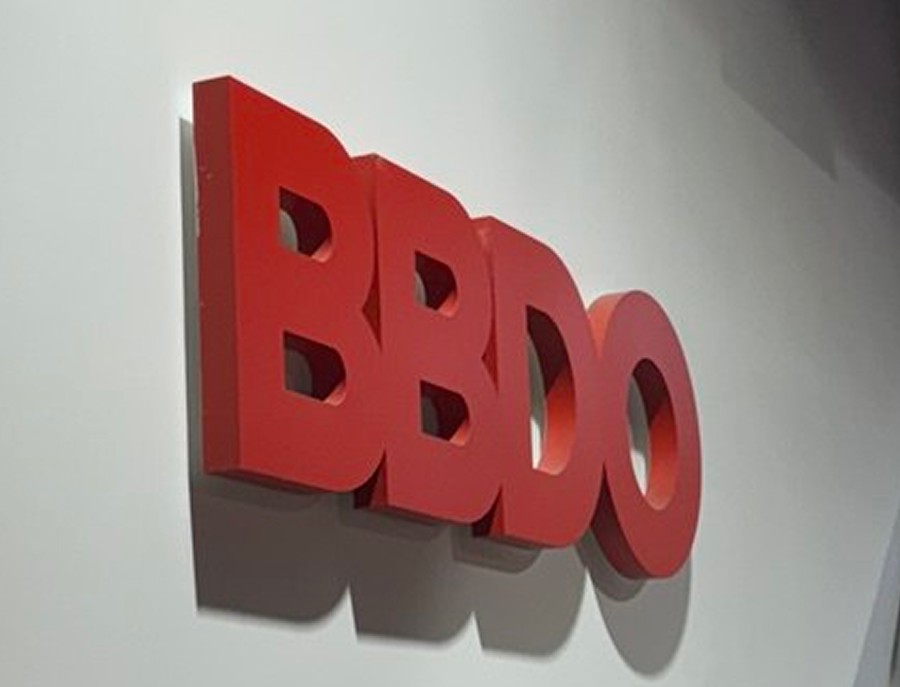
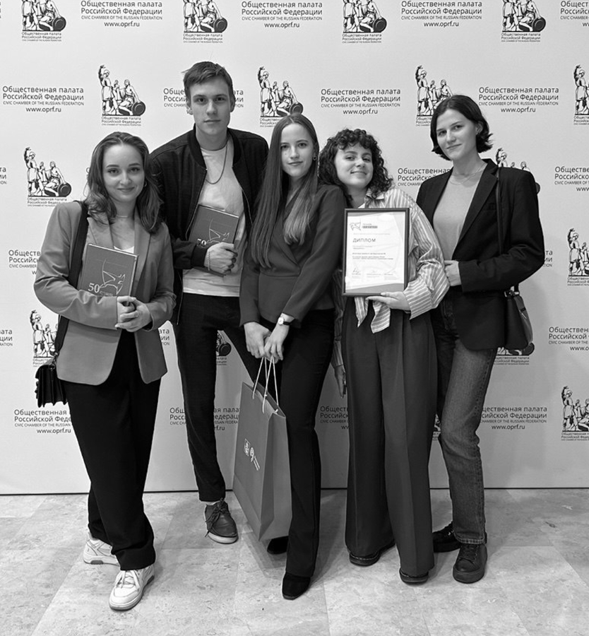
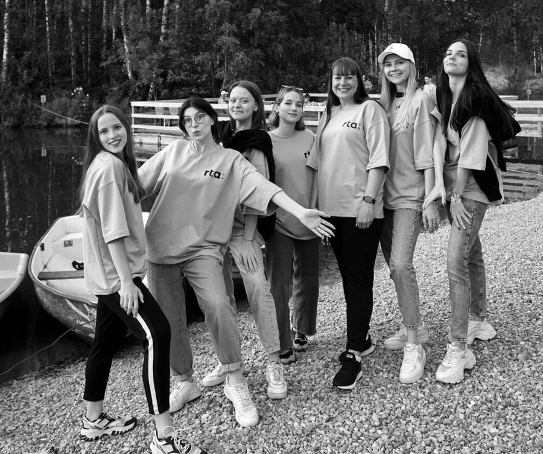
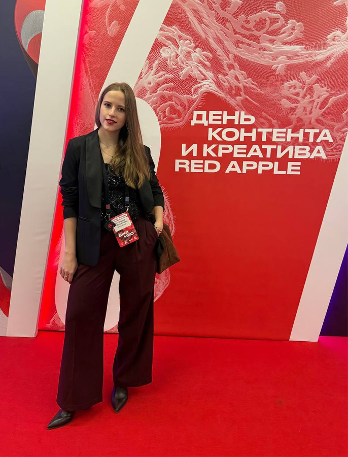
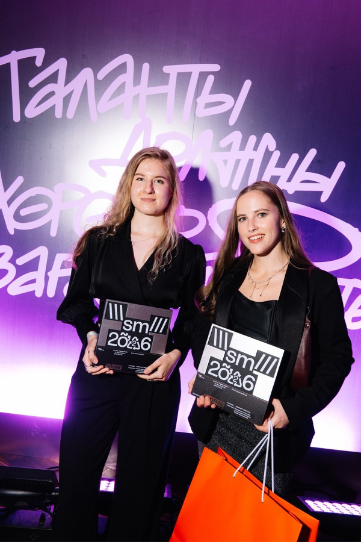
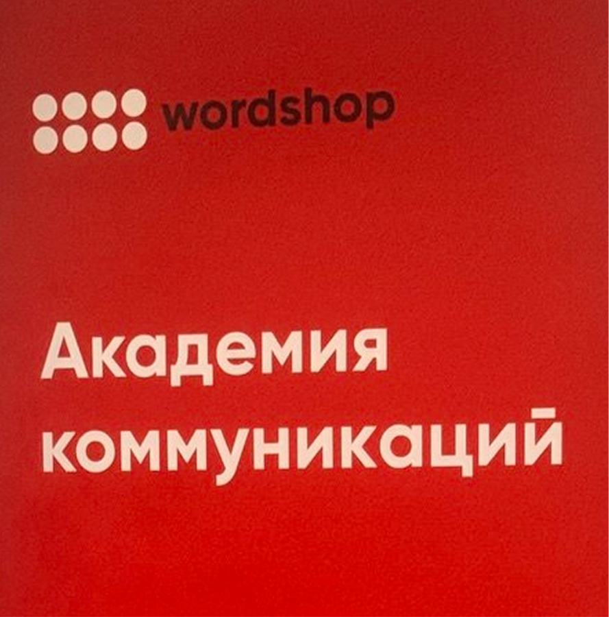
Моя страсть — изучать что-то новое, с самого детства меня было не оттащить от книг

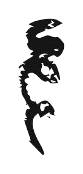
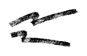
Рекламой я заинтересовалась в 10 классе, тогда же решила поступать на направление «Реклама и связи с общественностью», чтобы снимать те самые ролики, которые крутят по ТВ.
В вузе меня быстро опустили с небес на землю, но меня было не остановить: я начала поиск работы и уже с первого курса устроилась в агентство RTA стажером. Мечта работать в крупном известном агентстве сбылась, когда меня пригласили в команду BBDO.
Я всегда любила писать и что-то выдумывать: сначала это были школьные сочинения и постановки, потом статьи в вузовском журнале, а теперь я пишу для известных брендов и придумываю большие идеи. Я обожаю соревноваться и вдохновлять других на победу. Это качество здорово помогло во время учебы в академии Wordshop.
Моя страсть — изучать что-то новое, с самого детства меня было не оттащить от книг, мне искренне нравится учиться
В свободное время я тренируюсь в спортзале, хожу в баню, занимаюсь вокалом и рисую. Мне нравится готовить сложные блюда, и я часто пробую рецепты самых разных кухонь мира.
Моя мечта — увидеть своими глазами гонку Формулы 1 в Италии. Путешествия и Формула 1 — еще одна моя страсть.
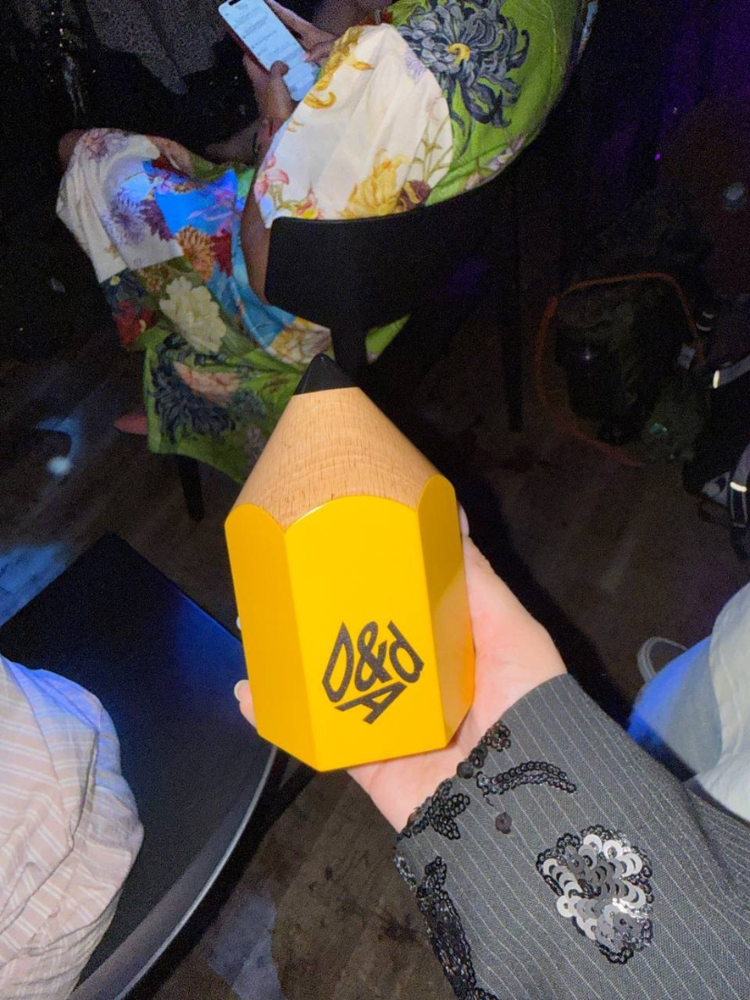